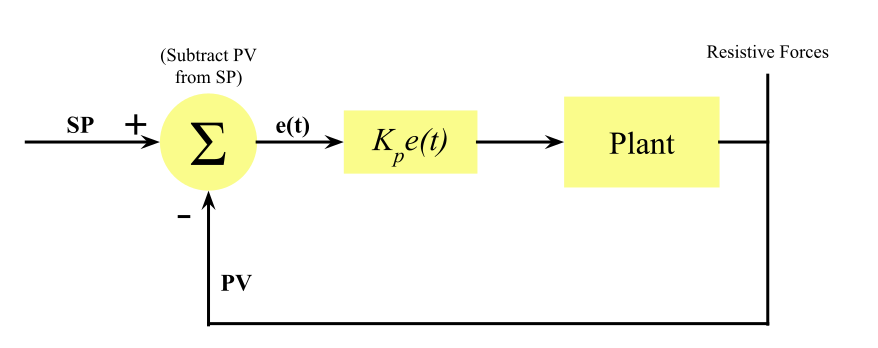

Whether you know it or not, PID is found in the machines and processes all around you. In the motors of an electric fan or the temperature settings of an oven, chances are there is some form of PID at work. So what is PID?
Formally, PID Control is a feedback-loop control system that stands for Proportional-Integral-Derivative Control and uses the following formula:
\[ CO(t) = K_{p}e(t) + K_{i}\int_0^t e(t) \,dt + K_{d} e'(t) \]
Now back up. This formula is very confusing if you're not familiar with calculus, and even if you are, what the heck is it supposed to mean? Hopefully, you'll gain an understanding for how the formula above works and an intuition for why PID does what it does.
Control System Basics
Before we get into actual PID, we need to talk about what a control system even is. Whenever a machine needs to get to a certain target value, whether it be speed, pressure, or temperature, it still often have to use a control system to get there if the machine can't directly control that value.
For example, let's an air tank needs to get to a certain pressure. The compressor can't just immediately go to that pressure; it can only really pump in or release air. Instead of using fancy math to decide exactly how much air to pump in to get a specific pressure, the air tank can just determine whether to pump in or release air based on the current pressure and continually adjust until it reaches that desired pressure. This is called a feedback loop, where the control system continually adjusts its output based on the current and target values, a pivotal part of control systems.
Let's get down some terminology. The setpoint (SP) is just a fancy name for the target value, and the proccess variable (PV) is an even fancier name for the current value. The difference between the setpoint and process variable is the error (e). The goal of any control system is to reduce the error to as close to 0 as possible, which would mean \( PV = SP \). Because all these values may be constatly changing over time, it's usually written as a function of time instead of as a variable.
It's extremely important that you get an intuition for the error. The error will be positive if \( PV < SP \) and negative if \( PV > SP \), and the larger the difference between the two, the farther from 0 the error will be.
\[ e(t) = SP(t) - PV(t) \]
Before delving into actual PID, let's take a look at a simpler but less effective control system as a example: bang-bang (BB) control. In BB control, when the error is positive, the controller output (CO) will be set to positive constant, and when the error is negative, the controller output will be set to a negative constant. This means that our controller only has two discreet states. (Technically 3, but an error of zero can be ignored in real applications).
\[ CO(t) = \begin{cases} -C, & e(t)<0 \\ C, & e(t)>0 \\ 0, & e(t)=0 \end{cases} \]
For this article, let's use a car as our model, which will try to get to a certain position. Our car will be able to instantaneously set its acceleration, but cannot directly control its speed or position, kind of like how we apply gas or the brakes to accelerate or decelerate the car.
Let's take a look at BB Control in action! You can set the setpoint with the slider under the car, and then press play to watch the car go. The bars above the car represent the direction and magnitude of the error and acceleration. The error is just the signed distance between the car and setpoint, and you should be able to see its relationship with the acceleration. Try playing around will the acceleration slider and see what happens!

Controls
As you can see, it's not great. BB Control tends to be kind of a blunt hammer, with just the 2 states for the acceleration causing the position to continually overshoot and oscillate indefinitely. Even changing the acceleration doesn't remedy the problem, as it's hard to balance the sensitivity of the system while still trying to make the car arrive quickly. As a result, bang-bang control is only used for things like thermostats, where speed and precision aren't that important, and all of the changes are slow.
While the animations are nice, graphs are a great way of visualising the motion of the car. The red graph will represent the PV, and the blue graph will represent the SP.
Controls
With a graph, the oscillatory motion becomes much clearer and easier to quantify. As we introduce PID, pay attention to the shape of the graph.
Often, we will want to use control block diagrams to show the flow of a control system. In this diagram, the control system calculates the error, and figures out whether to output a positive or negative value. After sending this value to the plant, it will spit out its PV for the controller to calculate the error all over again.
As we move on to more complicated control systems, make sure you understand how the control loop feeds into itself, continually attempting to drive the error to 0.
P Controller: Getting There
Let's start with just a P controller and leave out the I and D. The P stands for proportional, meaning the control output will be proportional to the error. This means that if the error is very large, the controller output will likewise be large, and if the error is small, the output will be small. The same applies for a negative error, but it's instead a negative output. This should help limit the oscillation from BB control, as a smaller error would mean less of a push, right?
In mathematical terms, we would set the controller output structly equal to the error. However, we will probably want to multiply the error by some constant to scale it up or down, tuning it to just the right value. After all, a car's position would be much different from a pool's water level. This constant that we multiply by is called the proportional gain, symbolized by \(K_{p}\).
Here is the equation for a P controller. As you can see, the controllers output (\(CO(t)\)) is directly proportional to the error.
\[ CO(t) = K_{p}e(t) \]
Try getting a feel for a P controller in this simulation, and look out for how the error relates to the acceleration. What happens when you increase and decrease the proportional gain?
Controls
Eh. Not much better is it? P-Control is advantageous to BB-Control as it oscillates less frequently, making it preferrable where some stability is needed. However, it still oscillates, which is a problem for us trying to minimize ther error as quickly and efficiently as possible.
Here is where we introduce damping. Almost any mechanical system will experience some sort of damping, where energy is lost due to some resistive forces. In our example, damping could be caused by air resistance or kinetic friction. Regardless, damping is a factor we can't control (expect for in simulations). We can still use it to our advantage though, and adjust our P-Gain to match it.
We'll use a pretty simple model for damping, just multiplying the velocity by a constant. A damping of 0 means that the velocity will not be changed, whereas a damping of 1 means that the velocity would always be 0. This damping tends to be close to 0 but not negligible.
We will also implement a minimum acceleration. This is a small threshold that the acceleration must cross over in order to start moving. This could caused by static friction, motor imperfections, or backlash in chains somewhere. Like damping, it is often an uncontrollable factor and we have to tune our gains to overcome it.
Let's look at an example! Adjust the minimum acceleration and damping sliders and see how the curve behaves.
Controls
Now we're getting somewhere! As you can see damping forces can actually be helpful for us to narrow down onto one value! However, if the damping and minimum acceleration are substantial, then we might run into another problem: really slow convergence onto the setpoint and possibly a steady-state error, that little gap you see when everything settles down.
Steady state error can be quite a nuisance where precision is needed. Since our error is very close to 0, the controller will output a very small value. In a perfect world, this would be no problem, but we have friction and backlash to get in the way in the real world. The small output from the P-controller is unable to overcome the resistive forces and we end up with slow convergence or even that steady-state error in the worst case.
However, not all hope is lost! The integral part of our PID controller is designed to help.
Let's take a look at our current progress through a control diagram. You should be able to trace the feedback loop. Remember, in the real world, there is only so much we can do to try to limit the resistive forces, and we have to
PI Controller: A Little Push
Now, the integral, which is what the I in PI stands for, is a pretty complex idea. If you are already familiar with calculus, feel free to skim or skip ahead. Otherwise, here's the gist.
Put simply, the integral is the area under the graph of a function. Integrals are often notated with a weird S-shape:
\[ \int_a^b f(x) \, dx \]
The two little numbers are the bounds of our integral. It just means the area from x=a to x=b. Let's say that the following graph represents the function \(f(x)\). The integral is just the area between the curve and the x-axis. You can just ignore the little \(dx\) for now.

Simple right? There's one caveat. If the curve goes under the x-axis, the integral there will be negative.
You can think of the integral as an accumulation, a sum of all the y-values over a certain range. For now, we're going to put off actually calculuating the integral to a later section and just assume thqat we can calculate it.
If you're still a bit confused, I would recommend checking out 3Blue1Brown and their Essence of Calculus series. Chapter 8 talks specifically about integrals, but the entire series is great for getting an intuition for basic calculus.
We are now ready for PI COntrol. For our updated PI control system, here is the equation:
\[ CO(t) = K_{p}e(t) + K_{i}\int e(t) \, dt \]
Now slow down! As you can see, we've taken the P term from our P Controller and just added an integral term to the end. We also have a similar \(K_{i}\) constant, which we multiply with the integral in order to give it more or less weight. This is called the i-gain
Now you might be thinking, what is the integral supposed to do? Play around in the simulation and see if you can figure it out yourself before the explanation. Because the proportional and integral terms are separate, you can see the individual components of the total acceleration that they contribute above the car. Try seeing if you can overcome the frictional forces only adjusting the integral term.
Controls
Have an idea of what the I term does? Over time, it sums up all the cumulative errors, and as the errors add up in the integral, it will push the error towards 0.
Can you see how this could get rid of our pesky steady-state error? With PI Control, the steady state error will continue to increase the area under the curve even if the error stays the same. As a result, it will gruadually drive the acceleration to overcome friction. In a sense, the integral term is way to keep pushing the controller to adjust its value, and by the time the error is very close to 0, the integral stops changing, and the acceleration components balance out.
That's why for many systems, PI controllers are enough, from temperature control to fluid flow regulation. For its simplicity, PI controllers are the default for many industrial applications.
Tuning it is a big balancing act, however. An i-gain too small could lead to the error being reduced too slowly, with a steady state error basically coming back. On the other hand, if the i-gain is too big, it could spiral out of control, overshooting so much as to start oscillating or even diverge. Even though it's exxagerated in this model, you can see how the i-gain still overshoots quite a bit, which is a problem with PI Controllers. Generally, some overshoot is good in a control system as it gets to the setpoint faster and allows the system to adjust, but sometimes, speed and minimizing overshoot are of the utmost importance, and that's where the D term comes in.
But first, we can add another element to our control block diagram:
PI control block diagram
PID Controller: Predicting the Future
For those applications where a simple PI controller just won't cut it, here's where the Derivative "D" term decomes useful.
The derivative is another one of those calculus terms, but this one is a little simpler. Graphically, it's just the slope of the tangent line at a given point on a function, denoted by \( f'(x) \). You can think of it as how the dependent variable changes as the independent variable changes. Again, 3Blue1Brown's Essence of Calculus series highly recommended.
Here's a little Desmos interactive to get a feel for derivatives. Drag around the input point and look at how the slope, or derivative changes. Notice how the derivative is positive when f(x) is increasing and how its negative when f(x) decreases.
Like before, we will add an additional derivative term to our equation: our final equation for PID! Can you guess what the derivative will do?
\[ CO(t) = K_{p}e(t) + K_{i}\int_0^t e(t) \,dt + K_{d} e'(t) \]
If you read the section title, you can probably tell. The derivative term is there to rein the controller back, to tell the controller to slow down before it creashes into a lamppost or something. Still not sure? Try a simulation:
Controls
Taking a look at the vectors, you can see that the derivative action often works against the error, which seems counterintuitive, but balancing it with the P and I terms can achieve a nice effect. As the error is decreasing, meaning the derivative is negative, the derivative term itself will be negative, effectively limiting the slope so the overshoot will not be as large while the error approaches 0.
The derivative term has one fatal flaw though: noise. With any mechical system, there will be some random uncontrollable variations in the data whether it be from shaking, external events, or just imprecise measurements. Because the derivative term uses just the error's rate of change rather than its actual value like P or I, small changes in the measurements could be amplified by the derivative term and increase instability.
To simulate noise, let's multiply the alter the PV randomly by a small amount.
Controls
And that's a basic overview of PID! To recap, here's a little control block diagram:
Control block diagram PID
But now that we've learned the theoretical bits, time to figure out how to actually implement what we've learned.